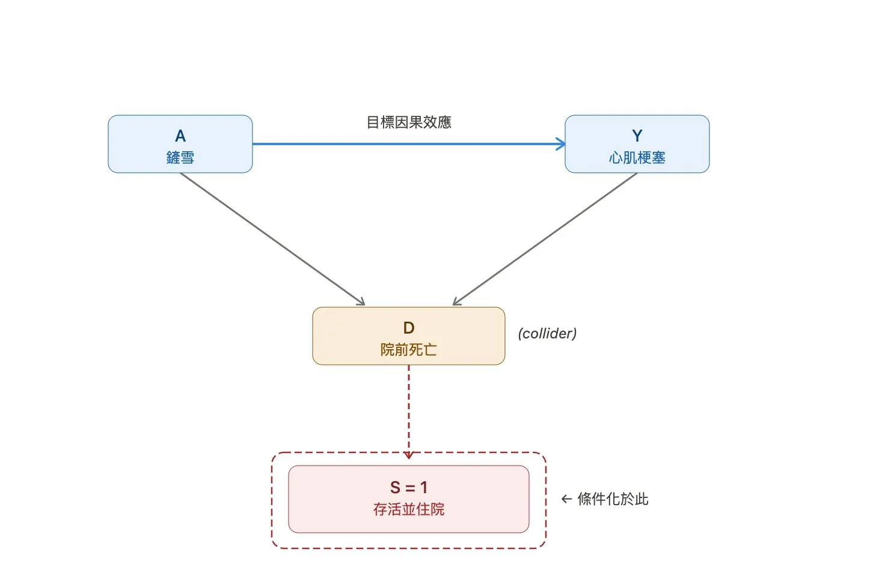
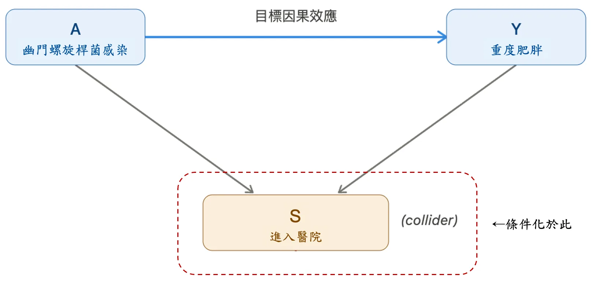

一、研究結果不是只看「發現了什麼」，也要看「是從誰身上發現的」
當我們閱讀一則健康新聞或一篇醫學研究時，最容易注意到的通常是結果本身：某種飲食方式是否和較低的心血管疾病風險有關？某種運動習慣是否和較長的壽命相關？某種藥物是否看起來比另一種藥物有更好的效果？這些結果當然重要，但在真正理解一項研究之前，還有一個更基本的問題常常被忽略：這些結果，是從哪些人身上得來的？
在實證醫學中，判讀一項研究時，不只要問結果是否「顯著」，也要問這項研究是否可信、效果大小是否重要，以及結果能否適用到我們關注的目標人群上。換句話說，一個研究結果不是單獨存在的，它依附於那一群被納入研究的人身上。研究中的參與者是年輕人還是老年人？是一般社區民眾，還是已經在醫院接受治療的患者？是願意長期填寫健康問卷的人，還是被動出現在全國性資料庫中的人？這些差異，都可能影響我們如何解讀研究結果。
這也是為什麼「誰被納入研究」本身就是一個重要的證據問題。假設一項研究發現，經常使用健康 App 記錄飲食的人，體重較低、血壓也較理想。我們不能立刻解讀成「使用 App 會讓人變健康」。因為願意下載 App、持續記錄飲食、甚至完成長期追蹤的人，可能本來就比較重視健康，也可能有較高的健康識能、較穩定的生活型態，或較充足的時間與資源。研究看到的差異，可能不只是 App 的效果，也可能反映了「哪些人被研究觀察到」。
因此，閱讀研究時，我們需要把目光從「研究發現了什麼」稍微往前推一步，問一個更根本的問題：這群被研究的人，能不能代表我們真正想了解的人？如果研究中的人和目標族群之間存在系統性的差異，研究結果就可能被扭曲。這種因為納入、排除、參與、失訪或分析對象不同而產生的偏差，就是流行病學中所說的 selection bias。
二、生活例子：從二戰時期的轟炸機與統計學家 Abraham Wald 說起
依照我們的習慣，在進入醫學研究之前，我們先從一個生活中比較容易理解的例子開始。這個例子常被用來說明「倖存者偏差」（survivorship bias）。倖存者偏差其實是 selection bias 的一種特殊形式，意思是我們觀察到的資料，只來自那些「成功留下來」或「被看見」的對象；而那些沒有留下來、沒有被觀察到的對象，反而可能才是理解問題的關鍵。
二戰時期，統計學家 Abraham Wald 參與了一項與軍機防護有關的分析：如果要降低轟炸機因敵方攻擊而墜毀的風險，有限的裝甲應該加強在哪些部位？當時能被觀察到的資料，來自那些遭受攻擊後仍然成功返航的轟炸機。從這些返航飛機上可以看到，有些部位，例如機翼或機身，出現了較多彈孔。直覺上，人們可能會認為，彈孔最多的地方就是最需要加強保護的地方。
但 Wald 的判斷正好相反。他注意到，這些資料只來自「還能飛回來」的飛機。換句話說，如果一架飛機的機翼或機身中彈後仍能返航，這反而表示這些部位的受損未必會導致飛機墜毀。真正危險的部位，可能是那些在返航飛機上較少看到彈孔的位置；因為一旦這些地方被擊中，飛機可能就無法返航，也就不會出現在我們觀察到的資料之中。
這個故事提醒我們，解讀資料時不只是要問「我們看到了什麼」，也要問「我們是在誰身上看到的」。在能飛回來的飛機上看到的受損位置，代表的是「受損後仍然能返航」的部位；而那些飛不回來的飛機，雖然沒有被觀察到，卻可能藏著真正導致墜毀的關鍵。
三、鏟雪與心肌梗塞的關係到底有多少？談暴露與研究的時間差如何影響觀察
如果今天我們想要了解「鏟雪」這個活動與心肌梗塞的關係，一個可能的研究方式是：在醫院住院病人中找出所有心肌梗塞的患者，並且詢問他們是否在發作前曾經鏟雪；同時，找出沒有心肌梗塞的住院病人作為對照組，同樣詢問他們是否在入院前曾經鏟雪。
表面上，這似乎是一個合理的 case-control study。假設醫院搜集病例時，心肌梗塞病例裡有 50 位曾經鏟雪、100 位沒有鏟雪；而無心肌梗塞對照組中有 100 位曾經鏟雪、900 位沒有鏟雪。若若我們只根據這些「成功進入醫院、並且被研究者觀察到」的病人來估計，則鏟雪與心肌梗塞的勝算比會是：
\(OR_{observed} = \frac{50/100}{100/900} = 4.5\)
可是，我們真的看到了所有心肌梗塞病例嗎？試想，如果有些人在鏟雪後發生心肌梗塞，並且在家門前，還來不及被送到醫院前就死亡，那麼這些人就不會出現在「住院心肌梗塞病例」之中。換句話說，他們雖然是心肌梗塞病例，卻不會被研究者看見並納入研究。假設有 50 人在鏟雪後發生心梗，到院前死亡，那麼真實的勝算比會是：
\(OR_{true} = \frac{(50+50)/100}{100/900} = 9\)
可以看到，真正的勝算比可能是 9，但在只納入住院病例的研究中，卻被低估成 4.5。
這個例子真正的問題，不只是「有些人死亡了」而已，而是死亡的機率可能和暴露狀態有關。鏟雪後發生的心肌梗塞可能比較容易快速致死，而這些暴露後快速死亡病例，就無法被納入從醫院住院病人搜集的人群。於是，研究中的心肌梗塞病例組不再能代表來源族群中所有心肌梗塞病例，而是偏向留下那些「沒有立刻死亡、能活著到醫院」的人。
也因此，這呼應了前面提到的問題：我們必須問「這個結果是在誰身上觀察到的？」如果我們只看住院的心肌梗塞病人，卻想推論到社區中所有心肌梗塞事件，就可能產生偏差。因為真正被研究者看見的，只是所有病例中的一部分，而且這一部分是否被看見，可能受到暴露狀態影響。對流行病學有興趣的讀者來說，這種偏差稱為 Neyman bias，也就是 incidence-prevalence bias 的一種。問題不只是「我們只看醫院病人」，而是「某些最關鍵的病例在到達醫院前就已經消失」。下圖以簡單的有向無環圖（directed acyclic graph, DAG）說明這一個現象：

再用更流行病學一點的語言：如果我們做的是以死亡證明補完院前死亡的community-based case-control study，就等於不再對S（selection indicator）做條件化，即使D（death）的差異存在，偏差也消失。
四、醫院病人真的能代表一般人嗎？一篇探討肥胖與幽門螺旋桿菌感染的研究
曾有一篇研究，研究者想了解幽門螺旋桿菌感染（Helicobacter pylori infection）是否與重度肥胖（morbid obesity）有關。這個研究的優點是，幽門螺旋桿菌感染不是靠受試者回憶，而是透過檢驗判定，因此比較不容易受到回憶偏差（recall bias）影響。然而，它仍然有一個重要限制：研究對象來自醫院，而「進入醫療系統」這件事本身可能同時受到感染狀態與肥胖狀態影響。
舉例來說，有幽門螺旋桿菌感染的人，可能因為胃痛、消化不良或其他腸胃症狀而比較容易接受檢查或就醫；另一方面，病態性肥胖者也可能因為代謝疾病、手術評估或其他共病而更常接觸醫療系統。當研究者只在醫院中尋找病例與對照組時，其實等於只觀察到「已經進入醫療系統的人」。如果「進入醫院」這件事同時受到幽門螺旋桿菌感染與病態性肥胖影響，兩者之間的關係就可能被扭曲。
不同於上一個例子中，偏差來自「病例必須存活到能被納入研究」的時間差；這裡的問題更接近 Berkson bias。Berkson bias 的核心是：醫院病人並不是來源族群的隨機樣本。不是所有看起來方便取得的對照組，都是合適的對照組；在醫院裡看到的暴露與疾病關係，也未必等於一般社區中的真實關係。換句話說，若研究樣本是因為「就醫」這個共同條件而被選進來，研究者就必須小心：我們看到的關聯，究竟是暴露與疾病真的有關，還是因為兩者都讓人更容易進入醫療系統？
從因果圖的角度來看，Berkson bias 可以理解為研究者條件化了一個 collider。當「暴露」和「疾病」都會影響一個人是否進入醫院或被研究者觀察到，而研究又只納入這些進入醫療系統的人時，原本在一般族群中不存在或較弱的關聯，可能會在研究樣本中被製造或扭曲。換句話說，問題不只是醫院病人比較特殊，而是「進入醫院」這個共同條件本身，可能把暴露與疾病錯誤地連接起來。

五、正式定義選樣偏差（selection bias）
在正式定義 selection bias 之前，我們可以先談「偏差」（bias），這是流行病學中最常被用到的名詞，也是大家恨得牙癢癢想盡辦法消滅的一個現象。Bias的定義是：一種 systematic deviation from the truth（系統性偏離真相）。這裡的關鍵字是「系統性」，它代表著偏差不是來自單純的隨機誤差，也不是樣本數不夠，而是因為研究設計、資料收集、分析或樣本選取方式，使結果朝某個方向偏離真實情況。
與系統性差異相反的詞是隨機差異，如果少數人沒有被納入的原因是隨機的，可能主要影響的是研究的精確度，並不構成系統性偏誤；但如果某一類人比較容易被納入，另一類人比較容易被排除，而且這種差異和研究問題有關，就可能造成偏差，且此偏差為系統性的。
從前面的幾個例子可以看到，selection bias 並不是單純指「研究樣本數太少」，也不只是「研究對象看起來不夠多元」。它真正的問題在於：被納入研究、被留下來追蹤、或最後被分析的人，和研究者真正想了解的人群之間，出現了系統性的差異。當這種差異又和研究中的暴露或結果有關時，研究得到的關聯就可能被扭曲。
因此我們可以定義 selection bias 是：被納入研究或分析的人，和原本應該代表的來源族群之間存在系統性差異，導致研究中的暴露與結果關係被扭曲。
可見，selection bias 的核心問題不是這項研究的樣本數是否足夠，而是「被收進來的是哪些人」。一項研究即使樣本數很大，如果它只觀察到某一群特定條件下才會出現的人，例如能成功返航的飛機、能活著到醫院的病例，或已經進入醫療系統的病人，研究結果仍然可能無法直接代表我們真正想了解的族群。
這也是為什麼在判讀健康研究時，我們不能只看結果數字，也不能只看 P 值是否顯著。更基本的問題是：這個結果來自哪一群人？哪些人沒有被納入？哪些人中途消失了？最後被分析的人，和我們想推論的族群是否足夠相似？
再舉一個更簡單的例子：如果今天我們想回答「全國民眾肥胖比例有多少？」就不能只在某一家醫院請病人回報身高體重，再把 BMI 超過肥胖門檻的比例當成全國盛行率。因為會出現在醫院的人，本來就可能比一般人有較高比例的心血管疾病、代謝疾病或其他共病。而肥胖也與這些疾病相關，因此從這個方式估計出來的肥胖比例，很可能高估全國民眾的肥胖比例。
要回答這類描述性問題，更合適的做法是從目標族群出發，例如在全國不同地區、年齡層與性別中進行有系統的抽樣，再用適當的加權方式回推全國估計值。這個例子和前面幾個暴露—疾病關係的例子略有不同，但背後的提醒是一樣的：研究結果回答的是「被納入研究的那群人」的問題；如果樣本和我們真正想了解的族群不同，答案就可能跟著改變。
六、以新聞實例來看：如何辨識 selection bias，又該如何正確解讀？
以 COVID-19 疫情期間的長新冠（long COVID）研究為例，曾有新聞根據 COVID Symptom Study App 的研究指出，約每 20 位 COVID-19 患者中，就有 1 位可能出現持續 8 週以上的症狀。這樣的結果很重要，因為在疫情早期，它幫助醫學界與大眾注意到：COVID-19 可能不只是急性感染，也可能留下較長期的健康影響。
但在解讀這類新聞時，我們仍然需要問：這個比例是從哪些人身上得來的？這類 app-based study 看見的，通常是下載 App、願意輸入資料、持續回報症狀，並且有足夠資料可供分析的人。沒有智慧型手機、不知道這個 App、不願意回報症狀、症狀太輕所以不持續使用，或症狀太嚴重以至於無法長期回報的人，都可能比較不容易出現在研究資料中。
這裡的重點不是說這項研究「錯了」，而是要更精確地理解它回答的是什麼問題。它比較直接回答的是：在這群能被 App 研究觀察到、並且持續提供資料的人當中，長期症狀大約有多常見。至於這個比例能不能直接代表所有 COVID-19 感染者，就需要更謹慎。
舉例來說，假設年長者比較不熟悉智慧型手機 App，也比較不容易持續輸入症狀；同時，年長者又可能比較容易出現長新冠。那麼，這類 App 資料就可能較少捕捉到高風險的年長族群，使研究中觀察到的長新冠比例低於真實比例。反過來說，也可能有另一種情況：症狀持續較久、比較擔心自己健康的人，反而更有動機長期回報症狀，這又可能讓比例偏高。也就是說，selection bias 的方向不一定固定；真正重要的是，我們要辨認「哪些人比較容易被看見，哪些人比較容易消失在資料之外」。
而事實上，一項英國蘇格蘭的全國性樣本研究指出，感染後仍有可歸因於 SARS-CoV-2 的長期症狀比例超過 10%。這類研究和 App-based study 的差異，不只是數字不同，更重要的是資料來源不同：一個主要來自願意使用 App 並持續回報的人，另一個則嘗試從更接近全國人口的樣本來估計。當資料來源不同，得到的比例自然可能不同。
同時，我們也應該注意另一個問題：英國的研究結果，能不能直接拿來代表臺灣的狀況？這裡牽涉到的是外推性（generalizability）。外推性指的是：研究結果是否可以推廣到其他族群或臨床情境。一項研究即使方法本身嚴謹、內部效度（internal validity）不錯，也不代表它一定能直接套用到所有地方。不同國家在年齡結構、感染波次、病毒株、疫苗覆蓋率、檢測政策、醫療可近性，甚至人群的基因上，都可能不同；這些差異都可能影響最後觀察到的比例。
Generalizability 和 selection bias 不是完全相同的概念，但兩者都提醒我們同一件事：研究結果必須放回「研究對象是誰」和「資料從哪裡來」的脈絡中理解。Selection bias 關心的是，研究樣本是否因為納入、排除、參與、失訪或資料可得性而被系統性篩選；generalizability 則進一步問，這個研究樣本中的結果，能否合理推廣到其他族群或情境。
結論是，這類研究結果不能簡單理解成「所有感染者中一定有同樣比例的人會發生 long COVID」。更精確地說，它回答的是：在特定資料來源、特定納入條件與特定追蹤方式下，被研究者看見的人當中，長期症狀大約有多常見。這並不是否定研究價值，而是提醒我們，健康新聞中的數字永遠要放回資料來源中理解：研究看見的是誰？又有哪些人沒有被看見？
七、結論：詮釋研究結果時，從「誰被納入研究」開始問起
Selection bias 提醒我們，研究結果不是只取決於「發現了什麼」，也取決於這些發現是從哪些人身上得來的。無論是能成功返航的轟炸機、能活著到醫院的心肌梗塞病例、已經進入醫療系統的病人，或是願意下載 App 並持續回報症狀的人，研究者最後看見的，往往不是世界的全部，而是經過某些條件篩選後留下來的一部分。
這並不是說有 selection bias 風險的研究就沒有價值。事實上，許多重要的醫學研究都必須在現實限制下進行：資料來自醫院、健康檢查、登錄系統、問卷追蹤，或電子健康紀錄。真正重要的不是要求每一項研究都完美無缺，而是理解它能回答什麼問題、不能回答什麼問題，以及它的結果適合推論到哪一群人。
讀健康新聞或醫學研究時，我們除了問「結果是多少」、「風險增加或降低多少」，也應該多問幾個問題：這項研究納入的是哪些人？哪些人沒有被納入？哪些人中途失訪或沒有留下資料？最後被分析的人，和我們真正關心的族群是否足夠相似？
如果上一篇文章的重點是「相關不等於因果」，那麼這一篇想補上的提醒是：
在判斷一個研究結果之前，我們還要先看見研究背後的那群人。因為證據不是憑空產生的；每一個數字、每一個比例、每一個風險估計，都來自某一群被研究看見的人。